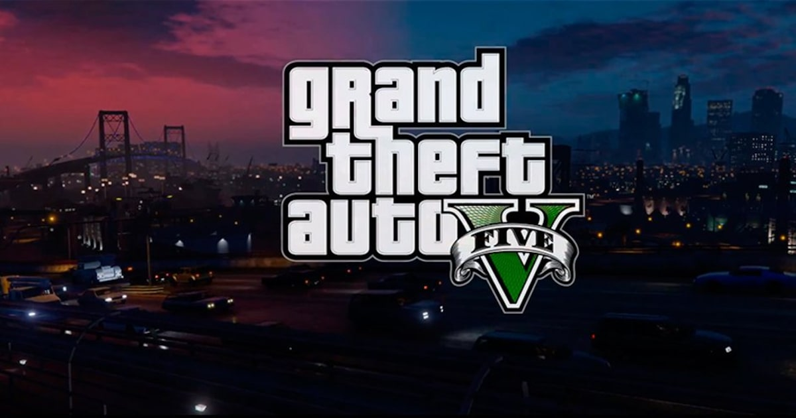

GUIA DE CONQUISTAS
Grand Theft Auto V

Sobre o jogo
Guia de platina dividido entre campanha, exploração, atividades, conclusão total e objetivos do modo online.
Dificuldade: 5/10 · Tempo estimado: 150+ horas · Troféus: 51 (1 platina, 3 ouro, 5 prata e 42 bronze) · Jogadores: 1 na campanha; modo online multijogador
Organização dos troféus
Lista de referência: 51 (1 platina, 3 ouro, 5 prata e 42 bronze).
A página apresenta o total e a distribuição geral informados para esta lista. A relação individual de nomes e descrições poderá ser adicionada em uma atualização posterior.
📌 Ordem recomendada
1️⃣ História principal
- Comece a campanha e conheça os três protagonistas.
- Complete as missões principais e explore Los Santos e Blaine County.
- Realize missões secundárias e atividades opcionais disponíveis.
- Conclua a história.
2️⃣ Troféus relacionados à história
- Complete os objetivos de progressão da campanha.
- Confira os troféus relacionados aos protagonistas e às decisões importantes.
- Preserve salvamentos antes de decisões relevantes quando necessário.
- Verifique os requisitos dos finais disponíveis.
3️⃣ Exploração e colecionáveis
- Explore o mapa e descubra os locais importantes.
- Complete eventos aleatórios e atividades secundárias.
- Encontre os colecionáveis exigidos pela conclusão total.
- Complete os desafios de exploração.
4️⃣ Atividades e conclusão
- Complete os desafios das atividades disponíveis.
- Participe dos eventos exigidos pela lista de troféus.
- Confira os requisitos de medalhas das missões.
- Acompanhe o progresso de conclusão total até cumprir todos os objetivos.
5️⃣ GTA Online
- Crie seu personagem e conclua os objetivos iniciais.
- Confira os requisitos de progressão do modo online.
- Complete os objetivos sociais e de evolução do personagem.
- Verifique os troféus online restantes e a disponibilidade dos serviços na sua plataforma.
6️⃣ Limpeza final
- Confira os troféus da campanha e os objetivos de exploração.
- Complete os requisitos de conclusão total que estiverem pendentes.
- Verifique os troféus online restantes.
- Conquiste os troféus restantes e desbloqueie a platina.
Avisos sobre objetivos perdíveis
- A lista contém objetivos relacionados ao modo online; confirme previamente a disponibilidade dos serviços e da edição que você utiliza.
- Alguns objetivos da campanha podem depender de decisões ou de atividades específicas. Consulte os requisitos antes de encerrar etapas importantes.
- O uso de códigos de trapaça pode desativar a obtenção de troféus durante a sessão.
Use esta seção como conferência antes de avançar em capítulos, decisões ou etapas irreversíveis.
Colecionáveis e objetivos secundários
- Colecionáveis espalhados por Los Santos e Blaine County.
- Eventos aleatórios e atividades secundárias.
- Desafios e objetivos exigidos para a conclusão total.
← Voltar à biblioteca